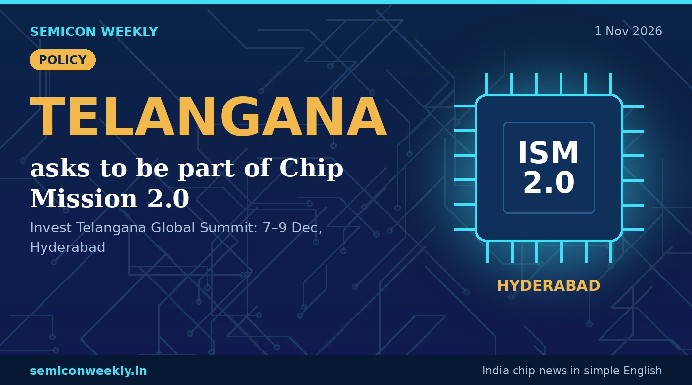

Telangana asks Centre to include it in Chip Mission 2.0
Hyderabad has many chip design teams but no approved chip plant yet. The state wants that to change.

In short
- Telangana's IT minister Sridhar Babu asked the central government to add the state to India Semiconductor Mission 2.0.
- He said this in New Delhi at an event for the Invest Telangana Global Summit.
- Telangana did not get any of the chip plants approved in the first round of the mission.
Key numbers
ISM 2.0The mission Telangana wants to join
7–9 DecInvest Telangana Global Summit, Hyderabad
0Chip plants Telangana got in round one
What happened
- At a New Delhi event promoting the Invest Telangana Global Summit, IT minister Sridhar Babu spoke about chips.
- He asked the Centre to include Telangana in the second phase of India Semiconductor Mission (ISM 2.0).
- The summit itself will be held in Hyderabad from 7 to 9 December 2026.
- In the first phase, chip plants went to other states, and none to Telangana.
Why it matters
Why this is useful
- States compete to bring chip plants, which brings big investment and jobs.
- A plant in Telangana would sit close to Hyderabad's many chip design teams.
Why it is good for freshers
- Hyderabad already has many chip design teams; a chip plant there would add factory and testing jobs for students in the south.
- Keep an eye on the December summit for company announcements.
- Design jobs (RTL, verification) are already in Hyderabad, so these skills are useful today.
Why it is good for India
- Spreading chip plants across states makes India's chip industry stronger and safer.
- Design and making in the same city helps both grow faster.
Words in this story
- ISM 2.0: the second phase of the India Semiconductor Mission, with a ₹1.25 lakh crore budget.
- Centre: the Union (central) government in New Delhi.